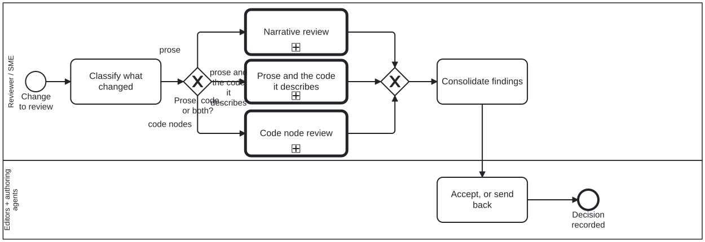

Generated from
cat-harness/processes/content/review-task.bpmnbygen-processes-viz.ts— do not edit here. All processes
Process_Review · advisory · 6 step(s)
The generic review position: classify what changed, descend into the review that fits it, consolidate what comes back, and accept or send back.
You are in this process for any change under review. It is a DISPATCHER — the actor takes on the inner lane’s role for the call path only — which is why prose and code can both be reviewed without either reviewer having to know the other’s criteria. A change that is both — prose and the code it describes — takes a branch of its own, which reviews the two against each other; the gateway is exclusive and takes exactly one branch, so the earlier wording, that such a change goes through both, described a route the diagram could not take (issue #1042).
The accept-or-send-back decision lives here and nowhere beneath it. The subprocesses produce findings; this is the only lane entitled to turn findings into an outcome, and keeping that single makes “who decided” answerable.

| lane | role | what it does here |
|---|---|---|
| Reviewer / SME | reviewer |
Makes exactly one decision on its own — what changed, at Task_ClassifyChange — and for everything after that descends into a subprocess, taking on the narrative- or code-reviewer role for that call path only rather than carrying both statically. A change that is both visits both subprocesses in turn, and neither role widens the other. |
| Editors + authoring agents | editor |
Kept a separate lane on purpose, holding the one activity this diagram gives it: the reviewer who classified and judged the change is never the party that accepts it, so consolidated findings cross a lane boundary before anything is decided on them. |
Every one of the 6 step(s) is documented.
| step | lane | skill / sub-process | what it does |
|---|---|---|---|
Classify what changedTask_ClassifyChange |
Reviewer / SME | content-reviewstaging-review |
Prose, code nodes, or both. This is the only decision the generic lane makes on its own: everything after it is made inside a subprocess by the role that lane binds. Binds content-review, the same skill as Task_Consolidate in this lane,since placement PR3 (bean 63wl): it named semantic-review-scoping,a paper skill folio-assistant-sci owns, which this harness diagram cannot reach. A paper process that wants semantic scoping adds it by calling this process. |
Narrative reviewCall_NarrativeReview |
Reviewer / SME | calls Narrative review | Descend into Process_NarrativeReview. The actor takes on thenarrative-reviewer lane for this call path only. |
Code node reviewCall_CodeReview |
Reviewer / SME | calls Code node review | Descend into Process_CodeReview. The actor takes on the code-reviewerlane for this call path only. |
Prose and the code it describesCall_NarrativeCodeReview |
Reviewer / SME | calls Prose and the code it describes | Descend into Process_NarrativeCodeReview: judge what the pair checks could not settle (a stale pair, a false or undetermined claim), and send a disagreement with a checker to adjudication. Issue #1042, stage C. |
Consolidate findingsTask_Consolidate |
Reviewer / SME | content-review |
One report from however many subprocesses ran. Findings are advice: a reviewer cannot accept the change. |
Accept, or send backTask_EditorDecides |
Editors + authoring agents | content-validate |
The editor’s lane, kept separate on purpose: the reviewer who judged the change is not the position that accepts it. |
Every one of the 1 decision(s) is documented.
| decision | what decides it | branches |
|---|---|---|
Prose, code, or both?GW_Kind |
What changed decides which review it gets, from Task_ClassifyChange’s scoping. Prose alone goes to narrative review and code nodes alone to code node review. A change touching BOTH SIDES OF A DECLARED PAIR — a diagram and the workflow it implements, a skill and the code beside it — goes to the pair review, which is the only branch that reads the two against each other. Exclusive, so exactly one branch is taken. | prose → Narrative review code nodes → Code node review prose and the code it describes → Prose and the code it describes |